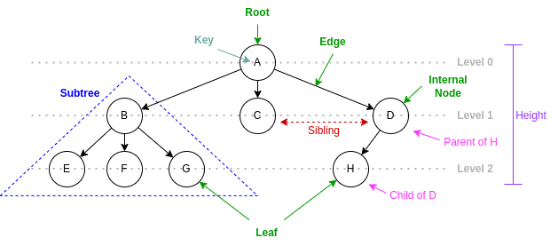

Tree Data Structure¶
Tree¶
Definition¶
In graph theory, a tree is a connected and acyclic undirected graph, consisting of nodes and edges, where there are no closed loops or circuits, often used to model various real-world networks and relationships.
In computer science, a tree is a hierarchical data structure composed of nodes connected by edges, where each node has a parent (except for the root node) and zero or more children, used for organizing and representing data with a clear and acyclic structure.
Recursive definition A tree is a collection of nodes where:
There is a special node called the root.
The root is connected to zero or more subtrees, each of which is also a tree.
Each subtree is a tree in itself and follows the same recursive definition.
Categorized Tree Concepts¶
Node (Vertex in graph theory)
root: the topmost node
internal nodes: nodes with at least one child
leaf nodes: nodes with no child
level/depth: the distance from the root node
degree: the number of child nodes
Edge
Parent-child relationship
Connectivity
path: a sequence of nodes connected by edges
distance: the number of edges found in a path
Relationships
parent/child: nodes connected by an edge
ancestor/descendant: nodes reachable by proceeding from child to parent
siblings: nodes with the same parent
Tree properties
degree: the maximum degree among all nodes
height: the longest path in a tree; the maximum level/depth among all nodes
level #: the set of nodes with the same level
ordered/unordered: the order of sibling nodes
Tree Glossary¶
- Tree¶
A collection of nodes. Each node have a value and refers to zero to n other nodes (child nodes). Each node have one parent node except for the root.
- Root¶
start point of a tree with no other nodes referring to it (not a child of any other node).
- Parent¶
A node is another node’s parent node if it refers to another node.
- Child¶
A node is another node’s child node if it is referred by another node.
- Sibling¶
A node is another node’s sibling node if they share the same parent.
- Leaf node¶
Nodes with no child.
- Internal node¶
Nodes has a least one child. The root node is also an internal node except for the case of a tree with only one node, in which the root is a leaf node.
- Degree of a node (Tree)¶
The number of child nodes.
- Degree of a tree¶
The maximum degree among all nodes.
- Edge/Link (Tree)¶
The relationship between a parent and its child.
- Ancestor (Tree)¶
A node reachable by repeated proceeding from child to parent.
- Descendant (Tree)¶
A node reachable by repeated proceeding from parent to child.
- Path between two nodes (Tree)¶
A sequence of nodes connected by edges.
- Distance between two nodes (tree)¶
The number of edges found in a path.
- Level/Depth of a node (tree)¶
The level of a node is the distance from the root node. Nodes can be grouped by levels.
- Height of a tree (tree)¶
The maximum level/depth among all nodes; the longest path in a tree.
- Subtree¶
A node with all of its descendants.
- Ordered Tree¶
A tree in which sibling nodes are ordered.
- Unordered Tree¶
A tree in which sibling nodes are unordered.
Applications of Trees¶
File system (directory, sub-directory, and file)
Decision making (decision tree)
Indexing (binary search tree, B-tree)
Parsing tree
Heap (complete binary tree)
Blockchain (Merkle tree)
Search-based Artificial Intelligence (game tree)
Tree Operations¶
Search
Breadth-first search (BFS)
Depth-first search (DFS)
Insert
Delete
Traversal
Visit all nodes in a tree in a systematic order.
Breadth-first traversal: visit all nodes at the same level before proceeding to the next level. Also known as level-order traversal.
Depth-first traversal: visit all nodes along a path before proceeding to the next path.
Pre-order: visit the current node before recursively visiting its subtrees.
Post-order: visit the current node after recursively visiting its subtrees.
Implementation Variations¶
Each node stores a variable-length list of references to child nodes
Each node stores a reference to its first child and a reference to its next sibling
Each node stores a reference to its parent
Binary tree¶
Definition¶
Binary trees are ordered trees with degree of 2. Each node have at most two child nodes known as left and right child. Binary trees inherit all properties of trees and only binary tree specific properties are listed below.
Binary Tree Concepts¶
left/right child or first/second child
Binary Tree Operations¶
In-order traversal: visit the current node between recursively visiting its left and right subtrees.
Applications of binary trees¶
Binary search tree
Expression parsing
Binary decision tree
Heap
Huffman coding
Important Binary Tree Variation¶
- Full binary tree¶
A binary tree in which every node has 0 or 2 children.
- Complete binary tree¶
A Binary Tree is a Complete Binary Tree if all the levels are completely filled except possibly the last level and the last level has all keys as left as possible.
- Perfect binary tree¶
A binary tree with all level filled.
Binary Tree Implementation¶
Each node stores two references to its left and right child nodes.